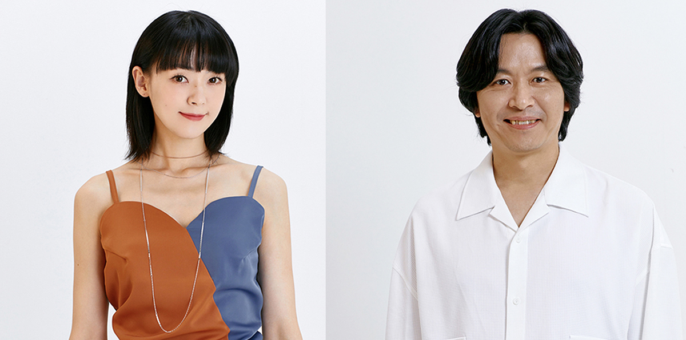
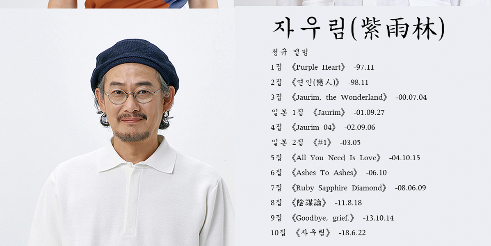

紫雨林
자우림(紫雨林)
"대체 불가능한 음악 세계를 가진 밴드"
자주색 비가 내리는 숲, 자우림紫雨林은 1997년 데뷔한 이래 10장의 정규 앨범과 5장의 비정규 앨범을 발표한 한국을 대표하는 밴드이다.
폭넓은 음악적 스펙트럼을 가진 자우림은 청춘과 인간, 사회에 관한 주제를 꾸준히 다루며 많은 팬들에게 지지를 받고 있다.
mumber
김윤아
Kim Yuna
1974.03.11
POSITION-Vocal
.
이선규
Lee Sunkyu
1971.08.28
POSITION-Guitar
.
김진만
Kim Jinman
1972.02.25
POSITION-Bass


Goodbye, grief


TRACK LIST
01. Anna
2. Dear Mother
03. 님아
04. 템페스트
05. I feel good
06. 스물다섯, 스물하나
07. 무지개
08. Dancing star
09. 전하고 싶은 말
10. 이카루스
11. 슬픔이여 이제 안녕
TRACK LIST
01. Anna
2. Dear Mother
03. 님아
04. 템페스트
05. I feel good
06. 스물다섯, 스물하나
07. 무지개
08. Dancing star
09. 전하고 싶은 말
10. 이카루스
11. 슬픔이여 이제 안녕

이카루스
난 내가 스물이 되면
빛나는 태양과 같이
찬란하게 타오르는 줄 알았고
난 나의 젊은 날은 뜨거운 여름과 같이
눈부시게 아름다울 줄 알았어.
아무도 말해주지 않는 사소한 비밀 얘기 하나,
아무리 몸부림을 쳐도 아무 것도 변하지 않아.
자, 힘차게 땅을 박차고 달려 봐도
보이는 건, 보이는 건...
난 내가 어른이 되면 빛나는 별들과 같이
높은 곳에서 반짝이는 줄 알았고
난 나의 젊은 날은 뜨거운 열기로 꽉 찬
축제와 같이 벅차오를 줄 알았어.
아무도 움직이지 않고 가만히 숨을 죽인채로
멍하니 주저앉아 있으면 아무것도 변하지 않아.
자, 힘차게 땅을 박차고 달려 보자,
저 먼 곳까지, 세상 끝까지.
자, 힘차게 날개를 펴고 날아 보자,
하늘 끝까지, 태양 끝까지.
난 내가 스물이 되면
빛나는 태양과 같이 찬란하게
타오르는 줄 알았어…

스물다섯, 스물하나
바람에 날려 꽃이 지는 계절엔
아직도 너의 손을 잡은 듯 그런 듯해
그때는 아직 꽃이 아름다운 걸
지금처럼 사무치게 알지 못했어
우~ 너의 향기가 바람에 실려 오네
우~ 영원할 줄 알았던 스물다섯, 스물하나
그날의 바다는 퍽 다정했었지
아직도 나의 손에 잡힐 듯 그런 듯해
부서지는 햇살 속에 너와 내가 있어
가슴 시리도록 행복한 꿈을 꾸었지
우~ 그날의 노래가 바람에 실려오네
우~ 영원할 줄 알았던 지난 날의 너와 나
너의 목소리도 너의 눈동자도
애틋하던 너의 체온마저도
기억해내면 할수록 멀어져 가는데
흩어지는 널 붙잡을 수 없어
바람에 날려 꽃이 지는 계절엔
아직도 너의 손을 잡은 듯 그런 듯해
그때는 아직 네가 아름다운 걸
지금처럼 사무치게 알지 못했어
우~ 너의 향기가 바람에 실려오네
우~ 영원할 줄 알았던 스물다섯, 스물하나
우~ 그날의 노래가 바람에 실려오네
우~ 영원할 줄 알았던 지난 날의 너와 나
우~
우~
우~ 영원할 줄 알았던 스물다섯, 스물하나
스물다섯, 스물하나

하하하쏭
난 내가 스물이 되면
빛나는 태양과 같이
찬란하게 타오르는 줄 알았고
난 나의 젊은 날은 뜨거운 여름과 같이
눈부시게 아름다울 줄 알았어.
아무도 말해주지 않는 사소한 비밀 얘기 하나,
아무리 몸부림을 쳐도 아무 것도 변하지 않아.
자, 힘차게 땅을 박차고 달려 봐도
보이는 건, 보이는 건...
난 내가 어른이 되면 빛나는 별들과 같이
높은 곳에서 반짝이는 줄 알았고
난 나의 젊은 날은 뜨거운 열기로 꽉 찬
축제와 같이 벅차오를 줄 알았어.
아무도 움직이지 않고 가만히 숨을 죽인채로
멍하니 주저앉아 있으면 아무것도 변하지 않아.
자, 힘차게 땅을 박차고 달려 보자,
저 먼 곳까지, 세상 끝까지.
자, 힘차게 날개를 펴고 날아 보자,
하늘 끝까지, 태양 끝까지.
난 내가 스물이 되면
빛나는 태양과 같이 찬란하게
타오르는 줄 알았어…